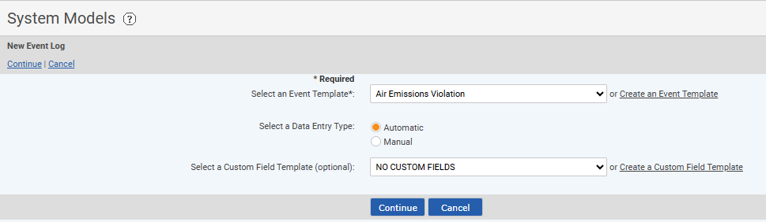
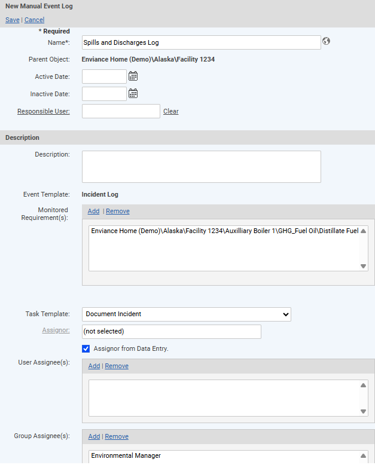
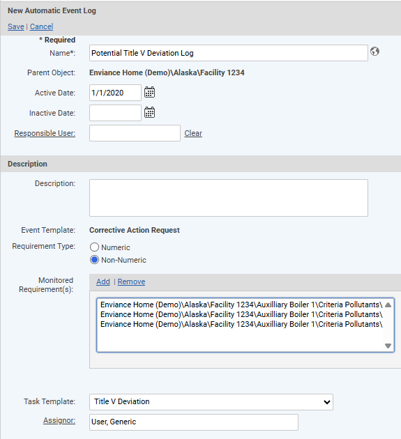
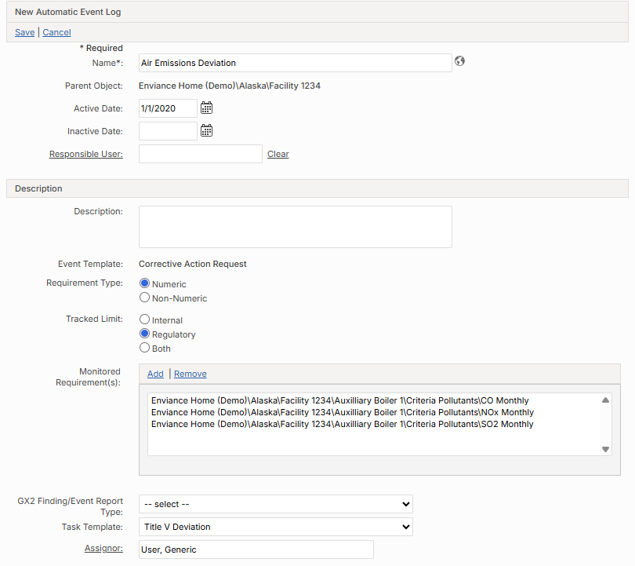
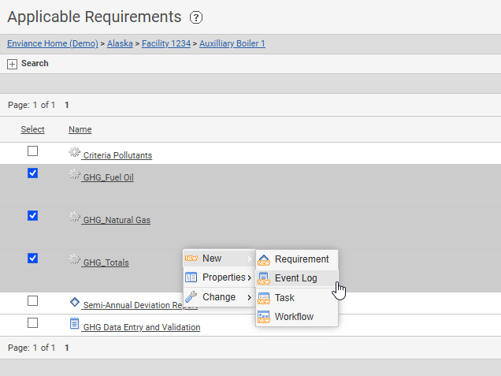

Auto Event Log for Numerics with task triggered by exceedance: CEMS Facility\Unit\PC-Fired Boiler Emission Point\Air Emissions Deviation
Auto Event Log for NNRs triggered by task "Not Determined": Permit Management Facility 2\Major Emission Sources\Title V Deviations (has task template)]
Manual Event Log with task triggered by creation of log entry: SPCC Facility\Spills and Discharges\Spill Response and Resolution]
To create an Event Log you must have an Event Template available to apply to the event. The event template contains the set of fields that store the data for each event. For more information, see Event Templates.
To create an Event Log:
Select the parent object in the system model tree or in the Applicable Requirements view, right click and choose New > Event Log.
Choose the appropriate Event Template from the selection list.
The Event Template contains the data fields that are available for entry when an event occurs. The Event Template must be previously defined. See Event Templates.

Select the Data Entry Type.
Select Automatic for automatically triggered events.
Select Manual for Event Logs in which entries will be created manually as needed.
Optionally, you may select a Custom Field Template to apply. See Custom Field Templates. The fields on a Custom Field Template will be seen on the Event Log properties, but will not be seen on the events.
Click Continue.
Complete the form for creating a new Event Log, including the following fields:
Name: This is the name for the Event Log that will appear in the system model tree.
Active Date: Optional.
Inactive Date: Optional.
Description: Description of what the Event Log is used for (optional).
For an Automatic Event Log: Select the Requirement Type (numeric or non-numeric). See examples below.
Numeric: If monitored requirement is Numeric, you must also select the Tracked Limit. This determines which limit exceedance will trigger an event, the Regulatory or Internal limit or both.
Non-numeric: If monitored requirement is Non-numeric, no further selection is necessary. Events will be created whenever a task associated with the requirement is completed with the compliance status Not Determined.
Select the Monitored Requirements to associate with the Event.
By default, all requirements (of the selected type) under the same parent object are listed. Remove the requirements you do not want to associate with the Event Log, so only those you want to monitor are shown.
To remove requirements, select the requirements (Ctrl-click for multiple selection) , then select Remove.
To add requirements from other parent objects, click Add.
In the selection window, find and select the requirement(s).
If your system is integrated with Core (GX2), you can choose an event from the GX2 Finding/Event Report Type list to be automatically created. For more information on event reports in Core (GX2), see Reporting an Event in The Cority User Guide.
To trigger a task when an event occurs, choose the Task Template from the selection list.
When a task is associated with an event, the fields on the Event Template are included on the task form so that the event may be documented from the task completion form. In addition, the Task Template may specify notifications and an optional workflow to be triggered. See Task Templates.
Click Assignor and select a user from the user selection window. For a Manual Event Log, you may designate the creator of the event log record as Assignor of the task by checking the Assignor from Data Entry box.
Click Add in the User Assignee(s) or Group Assignee(s) box and select users or groups to assign to the task from the selection window.
Optionally, you may associate documents or citations with the Event Log. Click Add and browse to select the documents or citations you want to associate.
You may also associate documents with the event template. Documents associated with the event template are attached to every event instance for every event log that uses the template. Documents associated with the event log are applicable only to the this event log and are only accessible from the event log properties, not from the event instances.
Select Save, then Confirm to save the Event Log.
Event Log Examples
Manual Event Log:

Automatic Event Log for Non-Numeric Requirement:

Automatic Event Log for Numeric Requirement:

Create Event Logs in Bulk
To create Event Logs in bulk:
In the Applicable Requirements view, use the search to find the parent objects (Units or POIs) under which you want to create the new Event Logs.
Select the checkboxes for the Units or POIs under which the new Event Logs will be created.
Right click and choose New > Event Log.

Select the Event Template and the Data Entry Type (automatic or manual).
Optionally, you may apply a Custom Field Template.
Click Continue.
Complete the Event Log properties as appropriate.
You must choose at least one requirement to monitor. All monitored requirements selected will be associated with all the Event Logs created. If you want to monitor different requirements for each Event Log, edit each Event Log individually after creation to select the appropriate requirement(s).